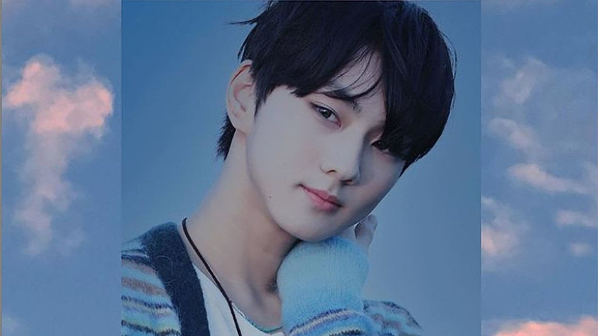
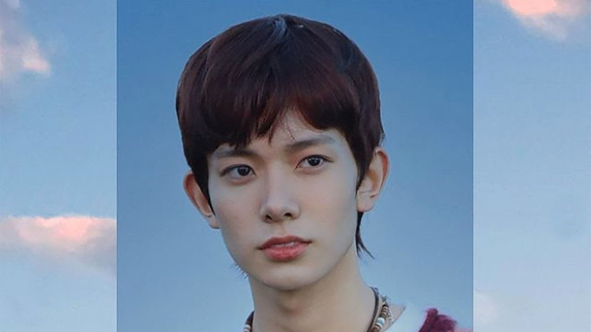
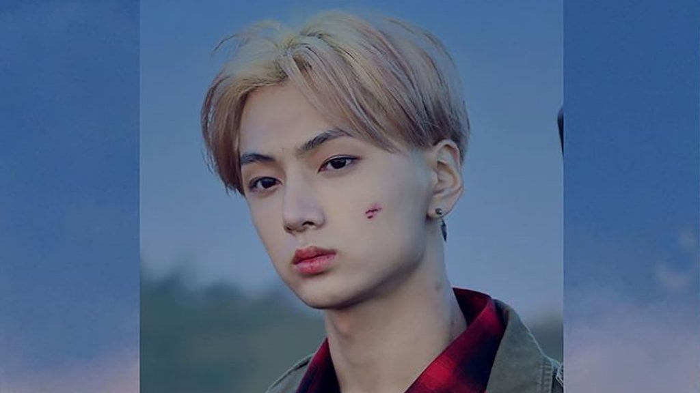
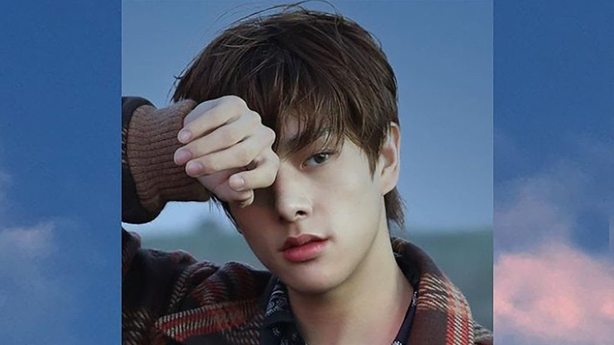
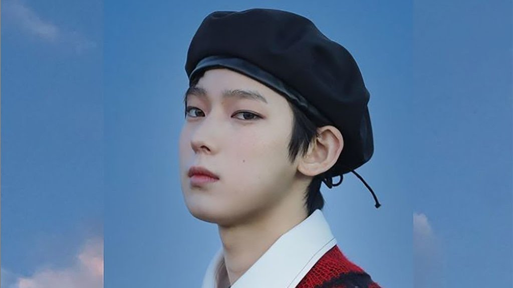
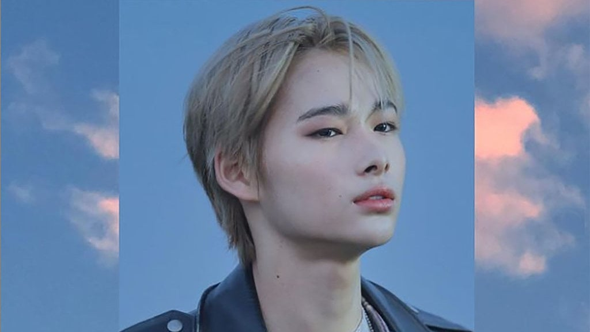

ENHYPEN
ENHYPEN (Hangul: 엔하이픈; RR: Enhaipeun; Jepang: エンハイフン) adalah boy band asal Korea Selatan yang dibentuk oleh
BELIFT LAB (kolaborasi Hybe Corporation dan CJ E&M) melalui survival show berjudul I-Land di Mnet pada tahun 2020.
ENHYPEN debut pada 30 November 2020 dengan album BORDER : DAY ONE dan lagu yang berjudul Given-Taken.
Nama Grup
Nama grup, Enhypen, diperkenalkan melalui siaran langsung episode terakhir I-Land. Menurut etimologi, Enhypen mendapatkan
namanya dari simbol tanda hubung (-), yang menciptakan arti baru termasuk "Koneksi, Penemuan, & Pertumbuhan".
Mirip dengan bagaimana tanda hubung menghubungkan kata-kata yang berbeda untuk menemukan makna baru, Enhypen bertujuan
"untuk datang bersama-sama untuk menghubungkan, menemukan dan tumbuh bersama untuk menciptakan tindakan baru."
Anggota
Berikut Adalah Nama-Nama Member Enhypen :
- Yang Jung Won (Leader)
- Lee Hee Seung
- Jay Park
- Jake Sim
- Park Sung Hoon
- Kim Sun Oo
- Nishimura Riki






Sejarah
Pada bulan Maret 2019, Belift Lab didirikan bersama oleh agensi hiburan Korea Selatan CJ E&M dan Hybe Corporation, dengan
rencana untuk membuat band baru pada tahun 2020.Audisi dimulai pada bulan yang sama di Seoul, Amerika Serikat, Taiwan,
dan Jepang, antara lain, untuk trainee pria yang lahir antara tahun 1997 dan 2008. Pada 8 Mei 2020, saluran televisi Mnet
mengumumkan seri kompetisi bertahan hidup, I-Land, sebuah perusahaan patungan dari kedua
perusahaan yang "mengikuti proses kelahiran artis K-pop generasi berikutnya."Enhypen dibentuk melalui I-Land,
menampilkan 23 peserta pelatihan laki-laki, beberapa di antaranya berasal dari audisi Belift, sementara yang lain ditransfer dari
Big Hit Music, sebelumnya Big Hit Entertainment, semuanya kemudian dilatih di bawah Belift Lab. Acara ini ditayangkan setiap
minggu di Mnet dari 26 Juni hingga 18 September 2020, dan didistribusikan secara internasional melalui saluran YouTube Hybe Labels.
Pertunjukan itu dibagi menjadi dua bagian.12 kontestan dari bagian pertama berhasil mencapai bagian kedua dari seri.
Pada episode terakhir acara tersebut, tujuh anggota dipilih dari sembilan kontestan final,
dengan enam dipilih oleh peringkat global dan anggota terakhir oleh pilihan produser.Daftar debut grup dengan tujuh anggota,
Heeseung, Jay, Jake, Sunghoon, Sunoo, Jungwon, dan Ni-ki, diumumkan melalui siaran televisi langsung dari final.